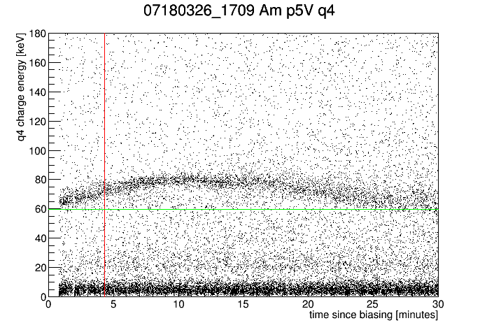
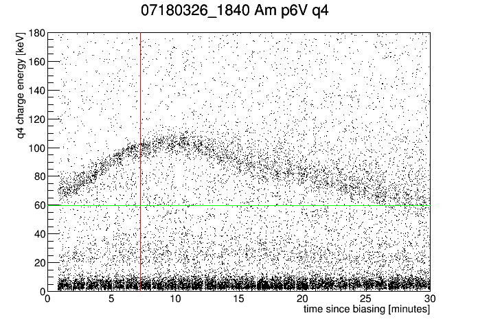
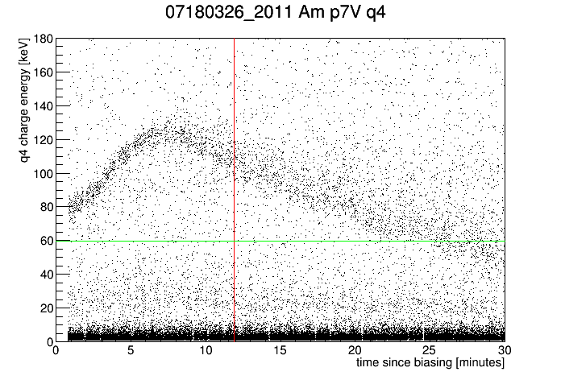
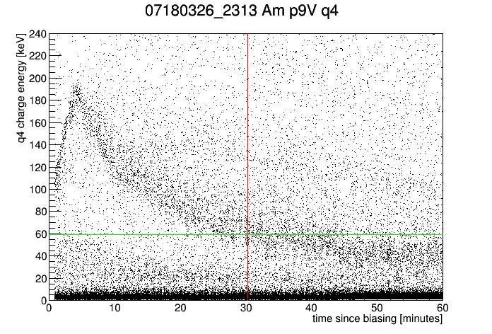
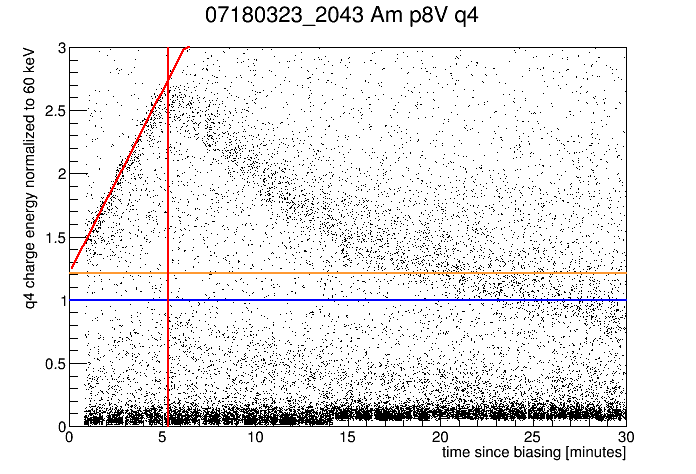
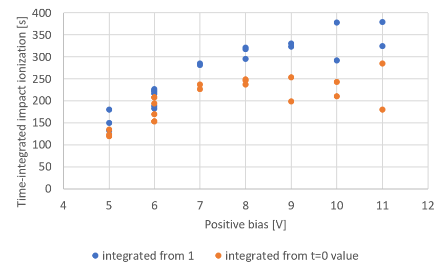

In this note we take a first look at the time at which the impact ionization stops rising for center-channel +60keV hole-drift events. Why does this falloff occur? One proposed reason is that space charge buildup in the detector degrades the field, which eventually kills the impact ionization effect. But as we will argue this does not fit the patterns seen in the data. Another option which seems to better fit the data is that there is a finite population of sites in the detector volume that can produce the time-dependent impact ionization, and that when it is exhausted the phenomenon ends. Whether this can make any physical sense is a serious question, but there's evidence that something like this is causing the falloff.
We can calculate how much time it should take for the space charge buildup to significantly affect the field in the detector. This requires some assumptions. I assume that electrons experience trapping, and negligible impact ionization. This is reasonable given the observations that at negative bias, 60keV events show less than full charge collection efficiency. If we calculate the charge collection efficiency (CCE) using our estimated absolute charge calibration, we find that for negative biases the curve has the familiar shape we see with typical CDMS crystals.
which trap in the detector, not only because the rate is much higher than the Am-241 rate but even moreso in positive bias because Am-241 events occur close to the positive side and so electrons are collected immediately. So we expect the events to be uniformly distributed throughout the detector. In that case we can predict the pattern of trapped charge and the resulting electric field as a function of z. But more simply, we can calculate the space-charge field at the ground side of the detector, which is where it will be maximum in the opposite direction of the applied field. We can roughly say that the time at which this field is significant is when it is equal in amplitude to the applied field, so that it exactly cancels at that point. For a cylindrical volume with an infinite-sheet approximation we find that this occurs when
\( \frac{N}{2A}\frac{e}{\epsilon \epsilon_0}=\frac{V_{bias}}{L} \)
where N is the number of trapped electrons, A and L the detector area and height, e the electric charge, \(\epsilon\) the Ge dielectric constant (16), \(\epsilon_0\) the free-space permittivity, and \( V_{bias} \) the applied bias. From data it has been estimated that background radiation produces charge carriers at a rate of 6.9 MHz in the center channel (radius 2.5 cm, height 3.2 cm). The fraction of these that trap is simply 1-CCE. We find that at the lowest positive bias at which time-dependent impact ionization is seen, around 4.5 V, the time at which space charge field becomes significant is 3.3 minutes. At the highest bias investigated, 12 V, the time is 112 minutes.
|  |  |
|  |  |
Above we show time plots at four biases, 5V, 6V, 7V, and 9V, with the calculated time at which space charge field becomes significant shown as a red vertical line. It's obvious that this time has no relation to the falloff time.
Since the falloff occurs earlier at higher biases, when the rate of increase in impact ionization is highest, it suggests the possibility that the total number of impact ionizations might be the same at each bias. To investigate this we can integrate the amplification-versus-time curve as shown in the figure below.
|  |
Here the vertical axis has been normalized to 59.54 keV, and a fit of the rising part of the 60keV line is shown. How far the 60keV events lie above 1 indicates the amount of impact ionization occuring at any given point in time. More precisely, the amount the line rises above 1 is the average number of impact ionizations per hole multiplied by a factor between 0 and 1. This factor is the average drift distance normalized to detector thickness of the charge carriers released by impact ionization.
Integrating the amplification-versus-time curve from 0 to the falloff time gives an indication of the total amount of impact ionization that occurs in that time period. Specifically we can write
\( N_{ii}=\frac{R_h}{<\delta>}\int_0^{t_{max}}{(G-1)dt} \)
with \( R_h \) the rate at which holes are produced by radiation and \( <\delta> \) the mean normalized drift distance of the charge carriers released by impact ionization. Below are the results of the integral part of this expression as a function of bias for various positive-bias series, using Nick's fit parameters from Note 1. The integral is performed two different ways: integrating above the amplification=1 line (blue) and integrating above the t0 amplification line (orange). The latter probably better captures the time-dependent phenomenon; the t0 amplification is probably due to a different impact ionization process that depends on bias but not on time.
|  |
If we focus on the time-dependent phenomenon, orange in the plot above, it appears that for 7 V and above the integrated impact ionization does indeed reach a roughly constant value with bias. The constant value is around 230 s. To interpret this as a total number of impact ionizations we need to multiply by the rate at which holes are produce by radiation divided by the mean drift distance of impact-ionized carriers. (Note: the integral was also performed for data with the Ba-133 source present at 6 V and 8 V. The result was the same as the 6 V and 8 V cases seen above with only the Am-241 and background radiation present.)
If we focus on 60keV events, the estimated rate at which these events produce holes is 47 kHz. If we also include other Am-241 events, the rate is probably closer to 62 kHz. If we take the mean drift distance to be around 0.5, this gives a total number of impact ionizations before the falloff of around 3e7. If we assume this has to do with a specific impurity population, the density would be very small if they are distributed over the entire center channel: around 5e5 cm-3. On the other hand if we suppose all of the targets are along a column below the Am source, suppose 100 um in radius, the density is 3e10 cm-3, more typical of impurity densities. But if the impact ionization is caused by phonons rather than directly by holes, the larger radius is probably more appropriate. We should also consider that background radiation, whose hole production rate is 100 times greater, may be the main thing that "exhausts" the supply of impact ionization targets.
If appears from the analysis here that the growth in time of impact ionization ends when some fixed total number of impact ionizations is reached. But does this make any physical sense? It's difficult to understand a scenario where this happens. We are assuming that the growth in impact ionization occurs as electrons get trapped on particular targets, and these trapped electrons are released in later impact ionizations. But after an impact ionization, why wouldn't that target be available for another electron to get trapped? We've run into this snag in understanding before - the idea that targets become "activated" over time, but then are one-time-only targets that cannot be reactivated. I've never heard any description of anything like that.